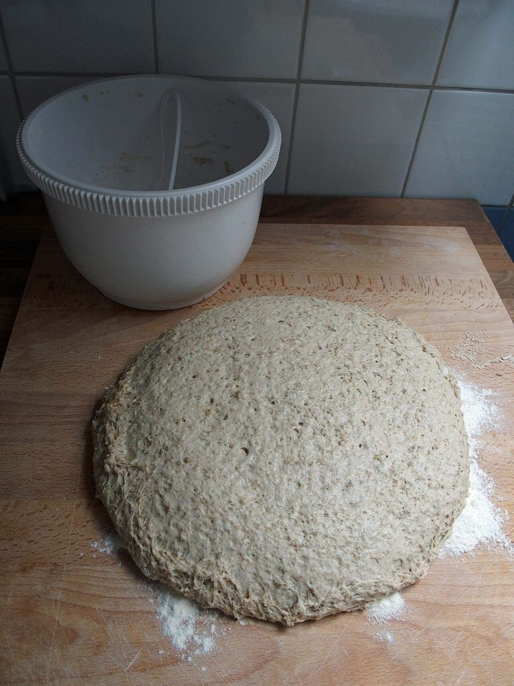
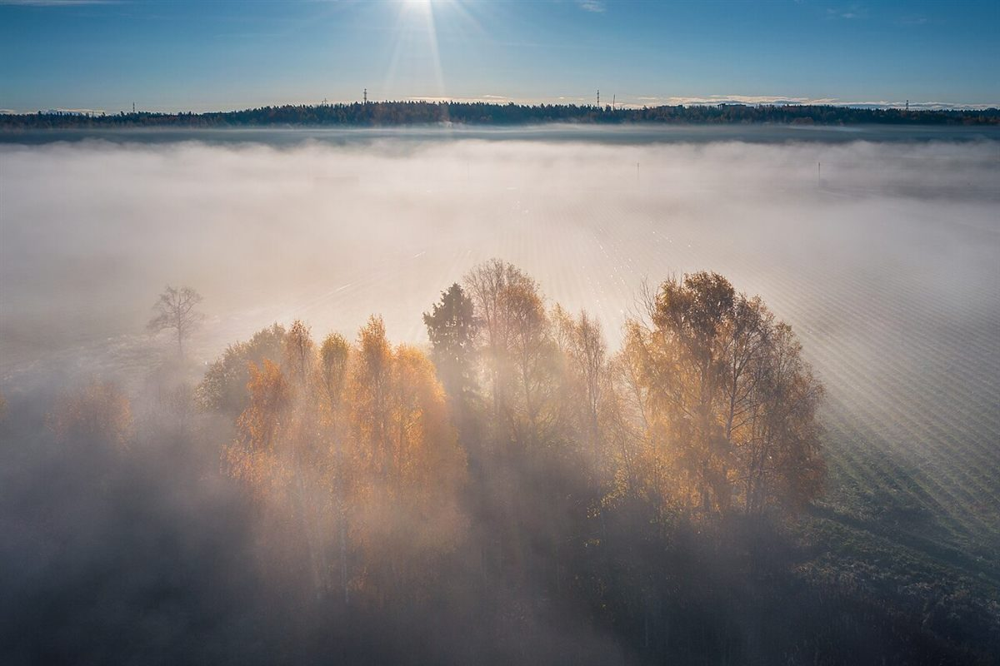

二口目
店のこと
店のこと
お店について確認できているのは、所在地・業種・Instagramのアカウントだけです。
このページの「想像してみる」部分は、制作側が想像して書いたものです。お店の実際の様子・考え・商品とは関係がありません。
確認できていること
- 屋号は「甘酒酵母のパン屋mushamusha」、業種はパン屋
- 所在地は群馬県吾妻郡長野原町北軽井沢1988 834(〒377-1412)
- 電話番号はなし。連絡はInstagramから
- 営業時間・定休日・メニュー・価格・ご予約・駐車場は準備中
屋号から読み取れること
屋号に「甘酒酵母」とあることから、甘酒にかかわる酵母に特色のあるパン屋さんなのだろう、と読み取れる範囲にとどめます。どのような製法なのか、どんな味やパンがあるのかは、制作側では分かりません。詳しくはお店にご確認ください。

想像してみる(制作側の連想)
一口目と二口目のあいだ。
パンのおいしさを、制作側は「むしゃむしゃ」の音で想像してみました。生地がふくらみ、焼けて、ひとかたまりのパンになり、やがて一口ずつ欠けていく。このサイトの丸いパンも、ページごとに少しずつ欠けていきます。お店で実際にどんな時間が流れているかは、ここには書けません。


北軽井沢という土地
高原の林のそばで(連想)
所在地は北軽井沢。制作側は、この地名から高原の林や朝の霧を連想し、写真を選びました。写真は長野原町・北軽井沢のものではなく、国外または撮影地不明のイメージです。

